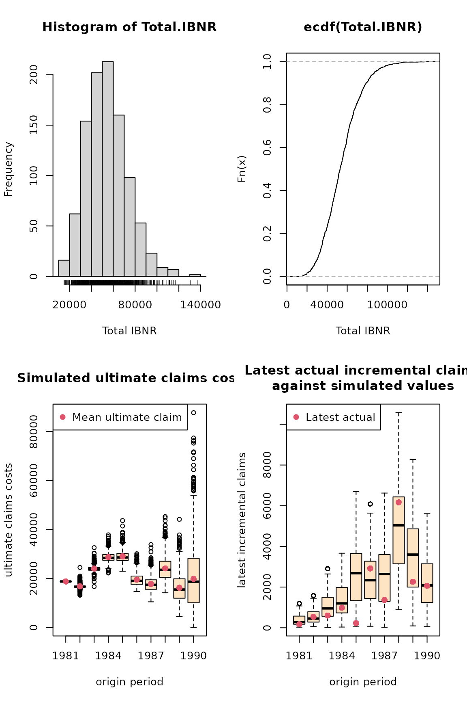
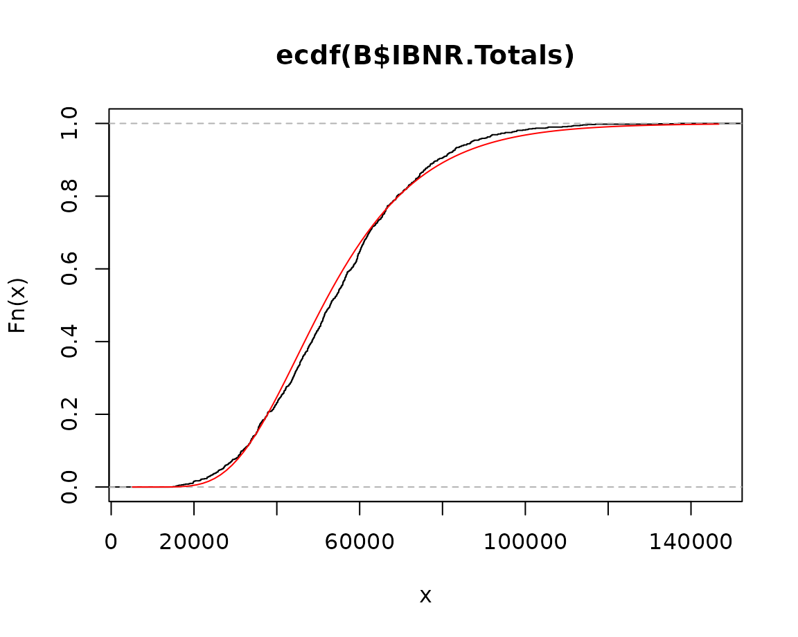

ChainLadder: Claims reserving with R
Alessandro Carrato, Fabio Concina, Markus Gesmann, Dan Murphy, Mario Wüthrich and Wayne Zhang
2023-06-27
Source:vignettes/ChainLadder.Rmd
ChainLadder.RmdAbstract
The ChainLadder package provides various statistical methods which are typically used for the estimation of outstanding claims reserves in general insurance, including those to estimate the claims development results as required under Solvency II.To cite package 'ChainLadder' in publications use:
Gesmann M, Murphy D, Zhang Y, Carrato A, Wuthrich M, Concina F, Dal
Moro E (2023). _ChainLadder: Statistical Methods and Models for
Claims Reserving in General Insurance_. R package version 0.2.18,
<https://mages.github.io/ChainLadder/>.Introduction
Claims reserving in insurance
The insurance industry, unlike other industries, does not sell products as such but promises. An insurance policy is a promise by the insurer to the policyholder to pay for future claims for an upfront received premium.
As a result insurers don’t know the upfront cost for their service, but rely on historical data analysis and judgement to predict a sustainable price for their offering. In General Insurance (or Non-Life Insurance, e.g. motor, property and casualty insurance) most policies run for a period of 12 months. However, the claims payment process can take years or even decades. Therefore often not even the delivery date of their product is known to insurers.
In particular losses arising from casualty insurance can take a long time to settle and even when the claims are acknowledged it may take time to establish the extent of the claims settlement cost. Claims can take years to materialize. A complex and costly example are the claims from asbestos liabilities, particularly those in connection with mesothelioma and lung damage arising from prolonged exposure to asbestos. A research report by a working party of the Institute and Faculty of Actuaries estimated that the un-discounted cost of UK mesothelioma-related claims to the UK Insurance Market for the period 2009 to 2050 could be around £10bn, see (Gravelsons et al. 2009). The cost for asbestos related claims in the US for the worldwide insurance industry was estimate to be around $120bn in 2002, see (Michaels 2002).
Thus, it should come as no surprise that the biggest item on the liability side of an insurer’s balance sheet is often the provision or reserves for future claims payments. Those reserves can be broken down in case reserves (or outstanding claims), which are losses already reported to the insurance company and losses that are incurred but not reported (IBNR) yet.
Historically, reserving was based on deterministic calculations with pen and paper, combined with expert judgement. Since the 1980’s, with the arrival of personal computer, spreadsheet software became very popular for reserving. Spreadsheets not only reduced the calculation time, but allowed actuaries to test different scenarios and the sensitivity of their forecasts.
As the computer became more powerful, ideas of more sophisticated models started to evolve. Changes in regulatory requirements, e.g. Solvency II in Europe, have fostered further research and promoted the use of stochastic and statistical techniques. In particular, for many countries extreme percentiles of reserve deterioration over a fixed time period have to be estimated for the purpose of capital setting.
Over the years several methods and models have been developed to estimate both the level and variability of reserves for insurance claims, see (Schmidt 2017) or (England and Verrall 2002) for an overview.
In practice the Mack chain-ladder and bootstrap chain-ladder models are used by many actuaries along with stress testing / scenario analysis and expert judgement to estimate ranges of reasonable outcomes, see the surveys of UK actuaries in 2002, (Lyons et al. 2002), and across the Lloyd’s market in 2012, (Orr 2012).
The ChainLadder package
Motivation
The ChainLadder package provides various statistical methods which are typically used for the estimation of outstanding claims reserves in general insurance. The package started out of presentations given by Markus Gesmann at the Stochastic Reserving Seminar at the Institute of Actuaries in 2007 and 2008, followed by talks at Casualty Actuarial Society (CAS) meetings joined by Dan Murphy in 2008 and Wayne Zhang in 2010.
Implementing reserving methods in R has several advantages. R provides:
- a rich language for statistical modelling and data manipulations allowing fast prototyping
- a very active user base, which publishes many extensions
- many interfaces to data bases and other applications, such as MS Excel
- an established framework for End User Computing, including documentation, testing and workflows with version control systems
- code written in plain text files, allowing effective knowledge transfer
- an effective way to collaborate over the internet
- built in functions to create reproducible research reports
- in combination with other tools such as LaTeX or RMarkdown easy to set up automated reporting facilities
- access to academic research, which is often first implemented in R
Brief package overview
This vignette will give the reader a brief overview of the functionality of the ChainLadder package. The functions are discussed and explained in more detail in the respective help files and examples, see also (Gesmann 2014).
A set of demos is shipped with the packages and the list of demos is available via:
demo(package="ChainLadder")Installation
You can install ChainLadder in the usual way from CRAN, e.g.:
install.packages('ChainLadder')For more details about installing packages see (R Development Core Team 2022b).
Using the ChainLadder package
Working with triangles
Historical insurance data is often presented in form of a triangle structure, showing the development of claims over time for each exposure (origin) period. An origin period could be the year the policy was written or earned, or the loss occurrence period. Of course the origin period doesn’t have to be yearly, e.g. quarterly or monthly origin periods are also often used. The development period of an origin period is also called age or lag.
Data on the diagonals present payments in the same calendar period. Note, data of individual policies is usually aggregated to homogeneous lines of business, division levels or perils.
Most reserving methods of the ChainLadder package expect triangles as input data sets with development periods along the columns and the origin period in rows. The package comes with several example triangles. The following R command will list them all:
library(ChainLadder)
data(package="ChainLadder")Let’s look at one example triangle more closely. The following triangle shows data from the Reinsurance Association of America (RAA):
RAA dev
origin 1 2 3 4 5 6 7 8 9 10
1981 5012 8269 10907 11805 13539 16181 18009 18608 18662 18834
1982 106 4285 5396 10666 13782 15599 15496 16169 16704 NA
1983 3410 8992 13873 16141 18735 22214 22863 23466 NA NA
1984 5655 11555 15766 21266 23425 26083 27067 NA NA NA
1985 1092 9565 15836 22169 25955 26180 NA NA NA NA
1986 1513 6445 11702 12935 15852 NA NA NA NA NA
1987 557 4020 10946 12314 NA NA NA NA NA NA
1988 1351 6947 13112 NA NA NA NA NA NA NA
1989 3133 5395 NA NA NA NA NA NA NA NA
1990 2063 NA NA NA NA NA NA NA NA NAThis triangle shows the known values of loss from each origin year and of annual evaluations thereafter. For example, the known values of loss originating from the 1988 exposure period are 1351, 6947, and 13112 as of year ends 1988, 1989, and 1990, respectively. The latest diagonal – i.e., the vector 18834, 16704, \(\dots\) 2063 from the upper right to the lower left – shows the most recent evaluation available. The column headings – 1, 2,\(\dots\), 10 – hold the ages (in years) of the observations in the column relative to the beginning of the exposure period. For example, for the 1988 origin year, the age of the 13112 value, evaluated as of 1990-12-31, is three years.
The objective of a reserving exercise is to forecast the future claims development in the bottom right corner of the triangle and potential further developments beyond development age 10. Eventually all claims for a given origin period will be settled, but it is not always obvious to judge how many years or even decades it will take. We speak of long and short tail business depending on the time it takes to pay all claims.
Plotting triangles
The first thing you often want to do is to plot the data to get an
overview. For a data set of class triangle the ChainLadder
package provides default plotting methods to give a graphical overview
of the data:
plot(RAA/1000, main = "Claims development by origin year")
Claims development chart of the RAA triangle, with one line per origin period.
Setting the argument lattice=TRUE will produce
individual plots for each origin period.
plot(RAA/1000, lattice=TRUE, main = "Claims development by origin year")
Claims development chart of the RAA triangle, with individual panels for each origin period
You will notice from the plots that the triangle RAA
presents claims developments for the origin years 1981 to 1990 in a
cumulative form. For more information on the triangle plotting functions
see the help pages of plot.triangle.
Transforming triangles between cumulative and incremental representation
The ChainLadder packages comes with two helper functions,
cum2incr and incr2cum to transform cumulative
triangles into incremental triangles and vice versa:
raa.inc <- cum2incr(RAA)
## Show first origin period and its incremental development
raa.inc[1,] 1 2 3 4 5 6 7 8 9 10
5012 3257 2638 898 1734 2642 1828 599 54 172
raa.cum <- incr2cum(raa.inc)
## Show first origin period and its cumulative development
raa.cum[1,] 1 2 3 4 5 6 7 8 9 10
5012 8269 10907 11805 13539 16181 18009 18608 18662 18834 Importing triangles from external data sources
In most cases you want to analyse your own data, usually stored in data bases or spreadsheets.
Importing a triangle from a spreadsheet
There are many ways to import the data from a spreadsheet. A quick and dirty solution is using a CSV-file.
Open a new workbook and copy your triangle into cell A1, with the first column being the accident or origin period and the first row describing the development period or age.
Ensure the triangle has no formatting, such a commas to separate thousands, as those cells will be saved as characters.

Screen shot of a triangle in a spreadsheet software.
Now open R and go through the following commands:
myCSVfile <- "path/to/folder/with/triangle.csv"
## Use the R command:
# myCSVfile <- file.choose() to select the file interactively
tri <- read.csv(file=myCSVfile, header = FALSE)
## Use read.csv2 if semicolons are used as a separator likely
## to be the case if you are in continental Europe
library(ChainLadder)
## Convert to triangle
tri <- as.triangle(as.matrix(tri))
# Job done.Small data sets can be transferred to R backwards and forwards via the clipboard under MS Windows.
Select a data set in the spreadsheet and copy it into the clipboard, then go to R and type:
tri <- read.table(file="clipboard", sep="\t", na.strings="")Reading data from a data base
R makes it easy to access data using SQL statements, e.g. via an ODBC connection1, for more details see (R Development Core Team 2022a). The ChainLadder packages includes a demo to showcase how data can be imported from a MS Access data base, see:
demo(DatabaseExamples)In this section we use data stored in a CSV-file2 to demonstrate some
typical operations you will want to carry out with data stored in data
bases. CSV stands for comma separated values, stored in a text file.
Note many European countries use a comma as decimal point and a
semicolon as field separator, see also the help file to
read.csv2. In most cases your triangles will be stored in
tables and not in a classical triangle shape. The ChainLadder package
contains a CSV-file with sample data in a long table format. We read the
data into R’s memory with the read.csv command and look at
the first couple of rows and summarise it:
filename <- file.path(system.file("Database",
package="ChainLadder"),
"TestData.csv")
myData <- read.csv(filename)
head(myData) origin dev value lob
1 1977 1 153638 ABC
2 1978 1 178536 ABC
3 1979 1 210172 ABC
4 1980 1 211448 ABC
5 1981 1 219810 ABC
6 1982 1 205654 ABC
summary(myData) origin dev value lob
Min. : 1 Min. : 1.00 Min. : -17657 Length:701
1st Qu.: 3 1st Qu.: 2.00 1st Qu.: 10324 Class :character
Median : 6 Median : 4.00 Median : 72468 Mode :character
Mean : 642 Mean : 4.61 Mean : 176632
3rd Qu.:1979 3rd Qu.: 7.00 3rd Qu.: 197716
Max. :1991 Max. :14.00 Max. :3258646 Let’s focus on one subset of the data. We select the RAA data again:
origin dev value lob
67 1981 1 5012 RAA
68 1982 1 106 RAA
69 1983 1 3410 RAA
70 1984 1 5655 RAA
71 1985 1 1092 RAA
72 1986 1 1513 RAATo transform the long table of the RAA data into a triangle we use
the function as.triangle. The arguments we have to specify
are the column names of the origin and development period and further
the column which contains the values:
raa.tri <- as.triangle(raa,
origin="origin",
dev="dev",
value="value")
raa.tri dev
origin 1 2 3 4 5 6 7 8 9 10
1981 5012 3257 2638 898 1734 2642 1828 599 54 172
1982 106 4179 1111 5270 3116 1817 -103 673 535 NA
1983 3410 5582 4881 2268 2594 3479 649 603 NA NA
1984 5655 5900 4211 5500 2159 2658 984 NA NA NA
1985 1092 8473 6271 6333 3786 225 NA NA NA NA
1986 1513 4932 5257 1233 2917 NA NA NA NA NA
1987 557 3463 6926 1368 NA NA NA NA NA NA
1988 1351 5596 6165 NA NA NA NA NA NA NA
1989 3133 2262 NA NA NA NA NA NA NA NA
1990 2063 NA NA NA NA NA NA NA NA NAWe note that the data has been stored as an incremental data set. As
mentioned above, we could now use the function incr2cum to
transform the triangle into a cumulative format.
We can transform a triangle back into a data frame structure:
raa.df <- as.data.frame(raa.tri, na.rm=TRUE)
head(raa.df) origin dev value
1981-1 1981 1 5012
1982-1 1982 1 106
1983-1 1983 1 3410
1984-1 1984 1 5655
1985-1 1985 1 1092
1986-1 1986 1 1513This is particularly helpful when you would like to store your results back into a data base. The following figure gives you an idea of a potential data flow between R and data bases.

Flow chart of data between R and data bases
Creating triangles interactively
For small data sets or while testing procedures, it may be useful to
create triangles interactively from the command line. There are two main
ways to proceed. With the first we create a matrix of data (including
missing values in the lower right portion of the triangle) and then
convert it into a triangle with as.triangle:
as.triangle(matrix(c(100, 150, 175, 180, 200,
110, 168, 192, 205, NA,
115, 169, 202, NA, NA,
125, 185, NA, NA, NA,
150, NA, NA, NA, NA),
nrow = 5, byrow = TRUE)) dev
origin 1 2 3 4 5
1 100 150 175 180 200
2 110 168 192 205 NA
3 115 169 202 NA NA
4 125 185 NA NA NA
5 150 NA NA NA NAWe may also create the triangle directly with triangle
by providing the rows (or columns) of known data as vectors,
thereby omitting the missing values:
dev
origin 1 2 3 4 5
1 100 150 175 180 200
2 110 168 192 205 NA
3 115 169 202 NA NA
4 125 185 NA NA NA
5 150 NA NA NA NAChain-ladder methods
The classical chain-ladder is a deterministic algorithm to forecast claims based on historical data. It assumes that the proportional developments of claims from one development period to the next are the same for all origin years.
Basic idea
Most commonly as a first step, the age-to-age link ratios are calculated as the volume weighted average development ratios of a cumulative loss development triangle from one development period to the next \(C_{ik}, i,k =1, \dots, n\).
\[ \begin{aligned} f_{k} &= \frac{\sum_{i=1}^{n-k} C_{i,k+1}}{\sum_{i=1}^{n-k}C_{i,k}} \end{aligned} \]
# Calculate age-to-age factors for RAA triangle
n <- 10
f <- sapply(1:(n-1),
function(i){
sum(RAA[c(1:(n-i)),i+1])/sum(RAA[c(1:(n-i)),i])
}
)
f[1] 2.999 1.624 1.271 1.172 1.113 1.042 1.033 1.017 1.009Often it is not suitable to assume that the oldest origin year is fully developed. A typical approach is to extrapolate the development ratios, e.g. assuming a linear model on a log scale.
dev.period <- 1:(n-1)
plot(log(f-1) ~ dev.period,
main="Log-linear extrapolation of age-to-age factors")
tail.model <- lm(log(f-1) ~ dev.period)
abline(tail.model)
co <- coef(tail.model)
## extrapolate another 100 dev. period
tail <- exp(co[1] + c(n:(n + 100)) * co[2]) + 1
f.tail <- prod(tail)
f.tail[1] 1.009The age-to-age factors allow us to plot the expected claims development patterns.
plot(100*(rev(1/cumprod(rev(c(f, tail[tail>1.0001]))))), t="b",
main="Expected claims development pattern",
xlab="Dev. period", ylab="Development % of ultimate loss")
The link ratios are then applied to the latest known cumulative claims amount to forecast the next development period. The squaring of the RAA triangle is calculated below, where an ultimate column is appended to the right to accommodate the expected development beyond the oldest age (10) of the triangle due to the tail factor (1.009) being greater than unity.
f <- c(f, f.tail)
fullRAA <- cbind(RAA, Ult = rep(0, 10))
for(k in 1:n){
fullRAA[(n-k+1):n, k+1] <- fullRAA[(n-k+1):n,k]*f[k]
}
round(fullRAA) 1 2 3 4 5 6 7 8 9 10 Ult
1981 5012 8269 10907 11805 13539 16181 18009 18608 18662 18834 19012
1982 106 4285 5396 10666 13782 15599 15496 16169 16704 16858 17017
1983 3410 8992 13873 16141 18735 22214 22863 23466 23863 24083 24311
1984 5655 11555 15766 21266 23425 26083 27067 27967 28441 28703 28974
1985 1092 9565 15836 22169 25955 26180 27278 28185 28663 28927 29200
1986 1513 6445 11702 12935 15852 17649 18389 19001 19323 19501 19685
1987 557 4020 10946 12314 14428 16064 16738 17294 17587 17749 17917
1988 1351 6947 13112 16664 19525 21738 22650 23403 23800 24019 24246
1989 3133 5395 8759 11132 13043 14521 15130 15634 15898 16045 16196
1990 2063 6188 10046 12767 14959 16655 17353 17931 18234 18402 18576The total estimated outstanding loss under this method is about 54100:
sum(fullRAA[ ,11] - getLatestCumulative(RAA))[1] 54146This approach is also called Loss Development Factor (LDF) method.
More generally, the factors used to square the triangle need not always be drawn from the dollar weighted averages of the triangle. Other sources of factors from which the actuary may select link ratios include simple averages from the triangle, averages weighted toward more recent observations or adjusted for outliers, and benchmark patterns based on related, more credible loss experience. Also, since the ultimate value of claims is simply the product of the most current diagonal and the cumulative product of the link ratios, the completion of interior of the triangle is usually not displayed in favor of that multiplicative calculation.
For example, suppose the actuary decides that the volume weighted factors from the RAA triangle are representative of expected future growth, but discards the 1.009 tail factor derived from the loglinear fit in favor of a five percent tail (1.05) based on loss data from a larger book of similar business. The LDF method might be displayed in R as follows.
linkratios <- c(attr(ata(RAA), "vwtd"), tail = 1.05)
round(linkratios, 3) # display to only three decimal places 1-2 2-3 3-4 4-5 5-6 6-7 7-8 8-9 9-10 tail
2.999 1.624 1.271 1.172 1.113 1.042 1.033 1.017 1.009 1.050
LDF <- rev(cumprod(rev(linkratios)))
names(LDF) <- colnames(RAA) # so the display matches the triangle
round(LDF, 3) 1 2 3 4 5 6 7 8 9 10
9.366 3.123 1.923 1.513 1.292 1.160 1.113 1.078 1.060 1.050
currentEval <- getLatestCumulative(RAA)
# Reverse the LDFs so the first, least mature factor [1]
# is applied to the last origin year (1990)
EstdUlt <- currentEval * rev(LDF) #
# Start with the body of the exhibit
Exhibit <- data.frame(currentEval, LDF = round(rev(LDF), 3), EstdUlt)
# Tack on a Total row
Exhibit <- rbind(Exhibit,
data.frame(currentEval=sum(currentEval), LDF=NA, EstdUlt=sum(EstdUlt),
row.names = "Total"))
Exhibit currentEval LDF EstdUlt
1981 18834 1.050 19776
1982 16704 1.060 17701
1983 23466 1.078 25288
1984 27067 1.113 30138
1985 26180 1.160 30373
1986 15852 1.292 20476
1987 12314 1.513 18637
1988 13112 1.923 25220
1989 5395 3.123 16847
1990 2063 9.366 19323
Total 160987 NA 223778Since the early 1990s several papers have been published to embed the simple chain-ladder method into a statistical framework. Ben Zehnwirth and Glenn Barnett point out in (Zehnwirth and Barnett 2000) that the age-to-age link ratios can be regarded as the coefficients of a weighted linear regression through the origin, see also (Murphy 1994).
lmCL <- function(i, Triangle){
lm(y~x+0, weights=1/Triangle[,i],
data=data.frame(x=Triangle[,i], y=Triangle[,i+1]))
}
sapply(lapply(c(1:(n-1)), lmCL, RAA), coef) x x x x x x x x x
2.999 1.624 1.271 1.172 1.113 1.042 1.033 1.017 1.009 Mack chain-ladder
Thomas Mack published in 1993 (Mack 1993) a method which estimates the standard errors of the chain-ladder forecast without assuming a distribution under three conditions.
Following the notation of Mack (Mack 1999) let \(C_{ik}\) denote the cumulative loss amounts of origin period (e.g. accident year) \(i=1,\ldots,m\), with losses known for development period (e.g. development year) \(k \le n+1-i\).
In order to forecast the amounts \(C_{ik}\) for \(k > n+1-i\) the Mack chain-ladder-model assumes:
\[ \begin{aligned} \mbox{CL1: } & E[ F_{ik}| C_{i1},C_{i2},\ldots,C_{ik} ] = f_k \mbox{ with } F_{ik}=\frac{C_{i,k+1}}{C_{ik}}\\ \mbox{CL2: } & Var( \frac{C_{i,k+1}}{C_{ik}} | C_{i1},C_{i2}, \ldots,C_{ik} ) = \frac{\sigma_k^2}{w_{ik} C^\alpha_{ik}}\\ \mbox{CL3: } & \{C_{i1},\ldots,C_{in}\}, \{ C_{j1},\ldots,C_{jn}\},\mbox{ are independent for origin period } i \neq j \end{aligned} \]
with \(w_{ik} \in [0;1], \alpha \in \{0,1,2\}\). If these assumptions hold, the Mack chain-ladder-model gives an unbiased estimator for IBNR (Incurred But Not Reported) claims.
The Mack chain-ladder model can be regarded as a weighted linear
regression through the origin for each development period:
lm(y ~ x + 0, weights=w/x^(2-alpha)), where \(y\) is the vector of claims at development
period \(k+1\) and \(x\) is the vector of claims at development
period \(k\).
The Mack method is implemented in the ChainLadder package via the
function MackChainLadder.
As an example we apply the MackChainLadder function to
our triangle RAA:
mack <- MackChainLadder(RAA, est.sigma="Mack")
mack # same as summary(mack) MackChainLadder(Triangle = RAA, est.sigma = "Mack")
Latest Dev.To.Date Ultimate IBNR Mack.S.E CV(IBNR)
1981 18,834 1.000 18,834 0 0 NaN
1982 16,704 0.991 16,858 154 206 1.339
1983 23,466 0.974 24,083 617 623 1.010
1984 27,067 0.943 28,703 1,636 747 0.457
1985 26,180 0.905 28,927 2,747 1,469 0.535
1986 15,852 0.813 19,501 3,649 2,002 0.549
1987 12,314 0.694 17,749 5,435 2,209 0.406
1988 13,112 0.546 24,019 10,907 5,358 0.491
1989 5,395 0.336 16,045 10,650 6,333 0.595
1990 2,063 0.112 18,402 16,339 24,566 1.503
Totals
Latest: 160,987.00
Dev: 0.76
Ultimate: 213,122.23
IBNR: 52,135.23
Mack.S.E 26,909.01
CV(IBNR): 0.52We can access the loss development factors and the full triangle via:
mack$f [1] 2.999 1.624 1.271 1.172 1.113 1.042 1.033 1.017 1.009 1.000
mack$FullTriangle dev
origin 1 2 3 4 5 6 7 8 9 10
1981 5012 8269 10907 11805 13539 16181 18009 18608 18662 18834
1982 106 4285 5396 10666 13782 15599 15496 16169 16704 16858
1983 3410 8992 13873 16141 18735 22214 22863 23466 23863 24083
1984 5655 11555 15766 21266 23425 26083 27067 27967 28441 28703
1985 1092 9565 15836 22169 25955 26180 27278 28185 28663 28927
1986 1513 6445 11702 12935 15852 17649 18389 19001 19323 19501
1987 557 4020 10946 12314 14428 16064 16738 17294 17587 17749
1988 1351 6947 13112 16664 19525 21738 22650 23403 23800 24019
1989 3133 5395 8759 11132 13043 14521 15130 15634 15898 16045
1990 2063 6188 10046 12767 14959 16655 17353 17931 18234 18402If you are only interested in the summary statistics then use:
mack_smmry <- summary(mack) # See also ?summary.MackChainLadder
mack_smmry$ByOrigin Latest Dev.To.Date Ultimate IBNR Mack.S.E CV(IBNR)
1981 18834 1.0000 18834 0.0 0.0 NaN
1982 16704 0.9909 16858 154.0 206.2 1.3395
1983 23466 0.9744 24083 617.4 623.4 1.0097
1984 27067 0.9430 28703 1636.1 747.2 0.4567
1985 26180 0.9050 28927 2746.7 1469.5 0.5350
1986 15852 0.8129 19501 3649.1 2001.9 0.5486
1987 12314 0.6938 17749 5435.3 2209.2 0.4065
1988 13112 0.5459 24019 10907.2 5357.9 0.4912
1989 5395 0.3362 16045 10650.0 6333.2 0.5947
1990 2063 0.1121 18402 16339.4 24566.3 1.5035
mack_smmry$Totals Totals
Latest: 1.610e+05
Dev: 7.554e-01
Ultimate: 2.131e+05
IBNR: 5.214e+04
Mack S.E.: 2.691e+04
CV(IBNR): 5.161e-01To check that Mack’s assumption are valid review the residual plots, you should see no trends in either of them.
plot(mack)Some residual show clear trends, indicating that the Mack assumptions are not well met
We can plot the development, including the forecast and estimated
standard errors by origin period by setting the argument
lattice=TRUE.
plot(mack, lattice=TRUE)
Using a subset of the triangle
The weights argument allows for the selection of a
subset of the triangle for the projections.
For example, in order to use only the last 5 calendar years of the
triangle, set the weights as follows:
calPeriods <- (row(RAA) + col(RAA) - 1)
(weights <- ifelse(calPeriods <= 5, 0, ifelse(calPeriods > 10, NA, 1))) [,1] [,2] [,3] [,4] [,5] [,6] [,7] [,8] [,9] [,10]
[1,] 0 0 0 0 0 1 1 1 1 1
[2,] 0 0 0 0 1 1 1 1 1 NA
[3,] 0 0 0 1 1 1 1 1 NA NA
[4,] 0 0 1 1 1 1 1 NA NA NA
[5,] 0 1 1 1 1 1 NA NA NA NA
[6,] 1 1 1 1 1 NA NA NA NA NA
[7,] 1 1 1 1 NA NA NA NA NA NA
[8,] 1 1 1 NA NA NA NA NA NA NA
[9,] 1 1 NA NA NA NA NA NA NA NA
[10,] 1 NA NA NA NA NA NA NA NA NA
MackChainLadder(RAA, weights=weights, est.sigma = "Mack")MackChainLadder(Triangle = RAA, weights = weights, est.sigma = "Mack")
Latest Dev.To.Date Ultimate IBNR Mack.S.E CV(IBNR)
1981 18,834 1.0000 18,834 0 0 NaN
1982 16,704 0.9909 16,858 154 206 1.339
1983 23,466 0.9744 24,083 617 623 1.010
1984 27,067 0.9430 28,703 1,636 747 0.457
1985 26,180 0.9050 28,927 2,747 1,469 0.535
1986 15,852 0.8229 19,264 3,412 2,039 0.598
1987 12,314 0.7106 17,329 5,015 2,144 0.428
1988 13,112 0.5613 23,361 10,249 4,043 0.395
1989 5,395 0.2935 18,384 12,989 5,931 0.457
1990 2,063 0.0843 24,463 22,400 16,779 0.749
Totals
Latest: 160,987.00
Dev: 0.73
Ultimate: 220,207.63
IBNR: 59,220.63
Mack.S.E 19,859.00
CV(IBNR): 0.34Munich chain-ladder
Munich chain-ladder is a reserving method that reduces the gap between IBNR projections based on paid losses and IBNR projections based on incurred losses. The Munich chain-ladder method uses correlations between paid and incurred losses of the historical data into the projection for the future (Quarg and Mack 2004).
MCLpaid dev
origin 1 2 3 4 5 6 7
1 576 1804 1970 2024 2074 2102 2131
2 866 1948 2162 2232 2284 2348 NA
3 1412 3758 4252 4416 4494 NA NA
4 2286 5292 5724 5850 NA NA NA
5 1868 3778 4648 NA NA NA NA
6 1442 4010 NA NA NA NA NA
7 2044 NA NA NA NA NA NA
MCLincurred dev
origin 1 2 3 4 5 6 7
1 978 2104 2134 2144 2174 2182 2174
2 1844 2552 2466 2480 2508 2454 NA
3 2904 4354 4698 4600 4644 NA NA
4 3502 5958 6070 6142 NA NA NA
5 2812 4882 4852 NA NA NA NA
6 2642 4406 NA NA NA NA NA
7 5022 NA NA NA NA NA NA
# Following the example in Quarg's (2004) paper:
MCL <- MunichChainLadder(MCLpaid, MCLincurred, est.sigmaP=0.1, est.sigmaI=0.1)
MCLMunichChainLadder(Paid = MCLpaid, Incurred = MCLincurred, est.sigmaP = 0.1,
est.sigmaI = 0.1)
Latest Paid Latest Incurred Latest P/I Ratio Ult. Paid Ult. Incurred
1 2,131 2,174 0.980 2,131 2,174
2 2,348 2,454 0.957 2,383 2,444
3 4,494 4,644 0.968 4,597 4,629
4 5,850 6,142 0.952 6,119 6,176
5 4,648 4,852 0.958 4,937 4,950
6 4,010 4,406 0.910 4,656 4,665
7 2,044 5,022 0.407 7,549 7,650
Ult. P/I Ratio
1 0.980
2 0.975
3 0.993
4 0.991
5 0.997
6 0.998
7 0.987
Totals
Paid Incurred P/I Ratio
Latest: 25,525 29,694 0.86
Ultimate: 32,371 32,688 0.99You can use summary(MCL)$ByOrigin and
summary(MCL)$Totals to extract the information from the
output above.
plot(MCL)
Bootstrap chain-ladder
The BootChainLadder function uses a two-stage
bootstrapping/simulation approach following the paper by England and
Verrall (England and Verrall 2002). In the
first stage an ordinary chain-ladder methods is applied to the
cumulative claims triangle. From this we calculate the scaled Pearson
residuals which we bootstrap R times to forecast future incremental
claims payments via the standard chain-ladder method. In the second
stage we simulate the process error with the bootstrap value as the mean
and using the process distribution assumed. The set of reserves obtained
in this way forms the predictive distribution, from which summary
statistics such as mean, prediction error or quantiles can be
derived.
## See also the example in section 8 of England & Verrall (2002)
## on page 55.
B <- BootChainLadder(RAA, R=999, process.distr="gamma")
BBootChainLadder(Triangle = RAA, R = 999, process.distr = "gamma")
Latest Mean Ultimate Mean IBNR IBNR.S.E IBNR 75% IBNR 95%
1981 18,834 18,834 0 0 0 0
1982 16,704 16,860 156 672 198 1,235
1983 23,466 24,106 640 1,342 1,117 2,838
1984 27,067 28,713 1,646 1,840 2,576 5,192
1985 26,180 29,049 2,869 2,402 4,042 7,492
1986 15,852 19,479 3,627 2,433 5,063 8,211
1987 12,314 17,892 5,578 3,039 7,521 11,450
1988 13,112 24,076 10,964 5,188 13,784 21,208
1989 5,395 16,274 10,879 6,290 14,595 22,496
1990 2,063 19,683 17,620 14,377 25,289 43,737
Totals
Latest: 160,987
Mean Ultimate: 214,965
Mean IBNR: 53,978
IBNR.S.E 19,619
Total IBNR 75%: 63,956
Total IBNR 95%: 92,375You can use summary(B)$ByOrigin and
summary(B)$Totals to extract the information from the
output above.
plot(B)
Quantiles of the bootstrap IBNR can be calculated via the
quantile function:
$ByOrigin
IBNR 75% IBNR 95% IBNR 99% IBNR 99.5%
1981 0.0 0 0 0
1982 198.4 1235 2538 2869
1983 1117.3 2838 5189 5819
1984 2576.1 5192 7601 8286
1985 4041.7 7492 10377 12200
1986 5062.7 8211 10285 11000
1987 7521.1 11450 13574 14370
1988 13784.5 21208 26327 27939
1989 14595.4 22496 29390 31437
1990 25288.6 43737 59400 80182
$Totals
Totals
IBNR 75%: 63956
IBNR 95%: 92375
IBNR 99%: 115777
IBNR 99.5%: 122422The distribution of the IBNR appears to follow a log-normal distribution, so let’s fit it:
## fit a distribution to the IBNR
library(MASS)
plot(ecdf(B$IBNR.Totals))
## fit a log-normal distribution
fit <- fitdistr(B$IBNR.Totals[B$IBNR.Totals>0], "lognormal")
fit meanlog sdlog
10.831755 0.363732
( 0.011508) ( 0.008137)
Multivariate chain-ladder
The Mack chain-ladder technique can be generalized to the multivariate setting where multiple reserving triangles are modelled and developed simultaneously. The advantage of the multivariate modelling is that correlations among different triangles can be modelled, which will lead to more accurate uncertainty assessments. Reserving methods that explicitly model the between-triangle contemporaneous correlations can be found in (Pröhl and Schmidt 2005), (Michael Merz and Wüthrich 2008b). Another benefit of multivariate loss reserving is that structural relationships between triangles can also be reflected, where the development of one triangle depends on past losses from other triangles. For example, there is generally need for the joint development of the paid and incurred losses (Quarg and Mack 2004). Most of the chain-ladder-based multivariate reserving models can be summarised as sequential seemingly unrelated regressions (Zhang 2010). We note another strand of multivariate loss reserving builds a hierarchical structure into the model to allow estimation of one triangle to “borrow strength” from other triangles, reflecting the core insight of actuarial credibility (Zhang, Dukic, and Guszcza 2012).
Denote \(Y_{i,k}=(Y^{(1)}_{i,k}, \cdots ,Y^{(N)}_{i,k})\) as an \(N \times 1\) vector of cumulative losses at accident year \(i\) and development year \(k\) where \((n)\) refers to the n-th triangle. (Zhang 2010) specifies the model in development period \(k\) as:
\[ \begin{equation} Y_{i,k+1} = A_k + B_k \cdot Y_{i,k} + \epsilon_{i,k}, \end{equation} \]
where \(A_k\) is a column of intercepts and \(B_k\) is the development matrix for development period \(k\). Assumptions for this model are:
\[ \begin{aligned} &E(\epsilon_{i,k}|Y_{i,1}, \cdots,Y_{i,I+1-k}) =0, \\ &cov(\epsilon_{i,k}|Y_{i,1}, \cdots, Y_{i,I+1-k})=D(Y_{i,k}^{-\delta/2}) \, \Sigma_k \, D(Y_{i,k}^{-\delta/2}), \\ &\text{losses of different accident years are independent}, \\ &\epsilon_{i,k} \text{ are symmetrically distributed}. \end{aligned} \]
In the above, \(D\) is the diagonal operator, and \(\delta\) is a known positive value that controls how the variance depends on the mean (as weights). This model is referred to as the general multivariate chain ladder [GMCL] in (Zhang 2010). A important special case where \(A_k=0\) and \(B_k\)’s are diagonal is a naive generalization of the chain-ladder, often referred to as the multivariate chain-ladder [MCL] (Pröhl and Schmidt 2005).
In the following, we first introduce the class
triangles, for which we have defined several utility
functions. Indeed, any input triangles to the
MultiChainLadder function will be converted to
triangles internally. We then present loss reserving
methods based on the MCL and GMCL models in turn.
Consider the two liability loss triangles from (Michael Merz and Wüthrich 2008b). It comes as a list of two matrices:
str(liab)List of 2
$ GeneralLiab: num [1:14, 1:14] 59966 49685 51914 84937 98921 ...
$ AutoLiab : num [1:14, 1:14] 114423 152296 144325 145904 170333 ...We can convert a list to a triangles object using
liab2 <- as(liab, "triangles")
class(liab2)[1] "triangles"
attr(,"package")
[1] "ChainLadder"We can find out what methods are available for this class:
showMethods(classes = "triangles")For example, if we want to extract the last three columns of each
triangle, we can use the [ operator as follows:
# use drop = TRUE to remove rows that are all NA's
liab2[, 12:14, drop = TRUE]An object of class "triangles"
[[1]]
[,1] [,2] [,3]
[1,] 540873 547696 549589
[2,] 563571 562795 NA
[3,] 602710 NA NA
[[2]]
[,1] [,2] [,3]
[1,] 391328 391537 391428
[2,] 485138 483974 NA
[3,] 540742 NA NAThe following combines two columns of the triangles to form a new matrix:
cbind2(liab2[1:3, 12]) [,1] [,2]
[1,] 540873 391328
[2,] 563571 485138
[3,] 602710 540742Separate chain-ladder ignoring correlations
The form of regression models used in estimating the development
parameters is controlled by the fit.method argument. If we
specify fit.method = "OLS", the ordinary least squares will
be used and the estimation of development factors for each triangle is
independent of the others. In this case, the residual covariance matrix
\(\Sigma_k\) is diagonal. As a result,
the multivariate model is equivalent to running multiple Mack
chain-ladders separately.
fit1 <- MultiChainLadder(liab, fit.method = "OLS")
lapply(summary(fit1)$report.summary, "[", 15, )$`Summary Statistics for Triangle 1`
Latest Dev.To.Date Ultimate IBNR S.E CV
Total 11343397 0.6482 17498658 6155261 427289 0.0694
$`Summary Statistics for Triangle 2`
Latest Dev.To.Date Ultimate IBNR S.E CV
Total 8759806 0.8093 10823418 2063612 162872 0.0789
$`Summary Statistics for Triangle 1+2`
Latest Dev.To.Date Ultimate IBNR S.E CV
Total 20103203 0.7098 28322077 8218874 457278 0.0556In the above, we only show the total reserve estimate for each
triangle to reduce the output. The full summary including the estimate
for each year can be retrieved using the usual summary
function. By default, the summary function produces reserve
statistics for all individual triangles, as well as for the portfolio
that is assumed to be the sum of the two triangles. This behaviour can
be changed by supplying the portfolio argument. See the
documentation for details.
We can verify if this is indeed the same as the univariate Mack chain
ladder. For example, we can apply the MackChainLadder
function to each triangle:
fit <- lapply(liab, MackChainLadder, est.sigma = "Mack")
# the same as the first triangle above
lapply(fit, function(x) t(summary(x)$Totals))$GeneralLiab
Latest: Dev: Ultimate: IBNR: Mack S.E.: CV(IBNR):
Totals 11343397 0.6482 17498658 6155261 427289 0.06942
$AutoLiab
Latest: Dev: Ultimate: IBNR: Mack S.E.: CV(IBNR):
Totals 8759806 0.8093 10823418 2063612 162872 0.07893The argument mse.method controls how the mean square
errors are computed. By default, it implements the Mack method. An
alternative method is the conditional re-sampling approach in (Buchwalder et al. 2006), which assumes the
estimated parameters are independent. This is used when
mse.method = "Independence". For example, the following
reproduces the result in (Buchwalder et al.
2006). Note that the first argument must be a list, even though
only one triangle is used.
(B1 <- MultiChainLadder(list(GenIns), fit.method = "OLS",
mse.method = "Independence"))$`Summary Statistics for Input Triangle`
Latest Dev.To.Date Ultimate IBNR S.E CV
1 3,901,463 1.0000 3,901,463 0 0 0.000
2 5,339,085 0.9826 5,433,719 94,634 75,535 0.798
3 4,909,315 0.9127 5,378,826 469,511 121,700 0.259
4 4,588,268 0.8661 5,297,906 709,638 133,551 0.188
5 3,873,311 0.7973 4,858,200 984,889 261,412 0.265
6 3,691,712 0.7223 5,111,171 1,419,459 411,028 0.290
7 3,483,130 0.6153 5,660,771 2,177,641 558,356 0.256
8 2,864,498 0.4222 6,784,799 3,920,301 875,430 0.223
9 1,363,294 0.2416 5,642,266 4,278,972 971,385 0.227
10 344,014 0.0692 4,969,825 4,625,811 1,363,385 0.295
Total 34,358,090 0.6478 53,038,946 18,680,856 2,447,618 0.131Multivariate chain-ladder using seemingly unrelated regressions
To allow correlations to be incorporated, we employ the seemingly
unrelated regressions (see the package systemfit, (Henningsen and Hamann 2007)) that
simultaneously model the two triangles in each development period. This
is invoked when we specify fit.method = "SUR":
fit2 <- MultiChainLadder(liab, fit.method = "SUR")
lapply(summary(fit2)$report.summary, "[", 15, )$`Summary Statistics for Triangle 1`
Latest Dev.To.Date Ultimate IBNR S.E CV
Total 11343397 0.6484 17494907 6151510 419293 0.0682
$`Summary Statistics for Triangle 2`
Latest Dev.To.Date Ultimate IBNR S.E CV
Total 8759806 0.8095 10821341 2061535 162464 0.0788
$`Summary Statistics for Triangle 1+2`
Latest Dev.To.Date Ultimate IBNR S.E CV
Total 20103203 0.71 28316248 8213045 500607 0.061We see that the portfolio prediction error is inflated to \(500,607\) from \(457,278\) in the separate development model
(“OLS”). This is because of the positive correlation between the two
triangles. The estimated correlation for each development period can be
retrieved through the residCor function:
[1] 0.247 0.495 0.682 0.446 0.487 0.451 -0.172 0.805 0.337 0.688
[11] -0.004 1.000 0.021Similarly, most methods that work for linear models such as
coef, fitted, resid and so on
will also work. Since we have a sequence of models, the retrieved
results from these methods are stored in a list. For example, we can
retrieve the estimated development factors for each period as
eq1_x[[1]] eq2_x[[2]]
[1,] 3.227 2.2224
[2,] 1.719 1.2688
[3,] 1.352 1.1200
[4,] 1.179 1.0665
[5,] 1.106 1.0356
[6,] 1.055 1.0168
[7,] 1.026 1.0097
[8,] 1.015 1.0002
[9,] 1.012 1.0038
[10,] 1.006 0.9994
[11,] 1.005 1.0039
[12,] 1.005 0.9989
[13,] 1.003 0.9997The smaller-than-one development factors after the 10-th period for the second triangle indeed result in negative IBNR estimates for the first several accident years in that triangle.
The package also offers the plot method that produces
various summary and diagnostic figures:
Summary and diagnostic plots from a MultiChainLadder object
The resulting plots are shown in figure above. We use
which.triangle to suppress the plot for the portfolio, and
use which.plot to select the desired types of plots. See
the documentation for possible values of these two arguments.
Other residual covariance estimation methods
Internally, the MultiChainLadder calls the
systemfit function to fit the regression models period by
period. When SUR models are specified, there are several ways to
estimate the residual covariance matrix \(\Sigma_k\). Available methods are
noDfCor, geomean, max, and
Theil with the default as geomean. The method
Theil will produce unbiased covariance estimate, but the
resulting estimate may not be positive semi-definite. This is also the
estimator used by (Michael Merz and Wüthrich
2008b). However, this method does not work out of the box for the
liab data, and is perhaps one of the reasons (Michael Merz and Wüthrich 2008b) used
extrapolation to get the estimate for the last several periods.
Indeed, for most applications, we recommend the use of separate chain
ladders for the tail periods to stabilize the estimation - there are few
data points in the tail and running a multivariate model often produces
extremely volatile estimates or even fails. To facilitate such an
approach, the package offers the MultiChainLadder2
function, which implements a split-and-join procedure: we split the
input data into two parts, specify a multivariate model with rich
structures on the first part (with enough data) to reflect the
multivariate dependencies, apply separate univariate chain-ladders on
the second part, and then join the two models together to produce the
final predictions. The splitting is determined by the last
argument, which specifies how many of the development periods in the
tail go into the second part of the split. The type of the model
structure to be specified for the first part of the split model in
MultiChainLadder2 is controlled by the type
argument. It takes one of the following values: MCL - the
multivariate chain-ladder with diagonal development matrix;
MCL+int - the multivariate chain-ladder with additional
intercepts; GMCL-int - the general multivariate
chain-ladder without intercepts; and GMCL - the full
general multivariate chain-ladder with intercepts and non-diagonal
development matrix.
For example, the following fits the SUR method to the first part (the first 11 columns) using the unbiased residual covariance estimator in (Michael Merz and Wüthrich 2008b), and separate chain-ladders for the rest:
require(systemfit)
W1 <- MultiChainLadder2(liab, mse.method = "Independence",
control = systemfit.control(methodResidCov = "Theil"))
lapply(summary(W1)$report.summary, "[", 15, )$`Summary Statistics for Triangle 1`
Latest Dev.To.Date Ultimate IBNR S.E CV
Total 11343397 0.6483 17497403 6154006 427041 0.0694
$`Summary Statistics for Triangle 2`
Latest Dev.To.Date Ultimate IBNR S.E CV
Total 8759806 0.8095 10821034 2061228 162785 0.079
$`Summary Statistics for Triangle 1+2`
Latest Dev.To.Date Ultimate IBNR S.E CV
Total 20103203 0.7099 28318437 8215234 505376 0.0615Similarly, the iterative residual covariance estimator in (Michael Merz and Wüthrich 2008b) can also be
used, in which we use the control parameter maxiter to
determine the number of iterations:
for (i in 1:5){
W2 <- MultiChainLadder2(liab, mse.method = "Independence",
control = systemfit.control(methodResidCov = "Theil", maxiter = i))
print(format(summary(W2)@report.summary[[3]][15, 4:5],
digits = 6, big.mark = ","))
} IBNR S.E
Total 8,215,234 505,376
IBNR S.E
Total 8,215,357 505,443
IBNR S.E
Total 8,215,362 505,444
IBNR S.E
Total 8,215,362 505,444
IBNR S.E
Total 8,215,362 505,444$`Summary Statistics for Triangle 1`
Latest Dev.To.Date Ultimate IBNR S.E CV
Total 11343397 0.6483 17497526 6154129 427074 0.0694
$`Summary Statistics for Triangle 2`
Latest Dev.To.Date Ultimate IBNR S.E CV
Total 8759806 0.8095 10821039 2061233 162790 0.079
$`Summary Statistics for Triangle 1+2`
Latest Dev.To.Date Ultimate IBNR S.E CV
Total 20103203 0.7099 28318565 8215362 505444 0.0615We see that the covariance estimate converges in three steps. These are very similar to the results in (Michael Merz and Wüthrich 2008b), the small difference being a result of the different approaches used in the last three periods.
Also note that in the above two examples, the argument
control is not defined in the prototype of the
MultiChainLadder. It is an argument that is passed to the
systemfit function through the ... mechanism.
Users are encouraged to explore how other options available in
systemfit can be applied.
Model with intercepts
Consider the auto triangles from (Zhang 2010). It includes three automobile
insurance triangles: personal auto paid, personal auto incurred, and
commercial auto paid.
str(auto)List of 3
$ PersonalAutoPaid : num [1:10, 1:10] 101125 102541 114932 114452 115597 ...
$ PersonalAutoIncurred: num [1:10, 1:10] 325423 323627 358410 405319 434065 ...
$ CommercialAutoPaid : num [1:10, 1:10] 19827 22331 22533 23128 25053 ...It is a reasonable expectation that these triangles will be correlated. So we run a MCL model on them:
f0 <- MultiChainLadder2(auto, type = "MCL")
# show correlation- the last three columns have zero correlation
# because separate chain-ladders are used
print(do.call(cbind, residCor(f0)), digits = 3) [,1] [,2] [,3] [,4] [,5] [,6] [,7] [,8] [,9]
(1,2) 0.327 -0.0101 0.598 0.711 0.8565 0.928 0 0 0
(1,3) 0.870 0.9064 0.939 0.261 -0.0607 0.911 0 0 0
(2,3) 0.198 -0.3217 0.558 0.380 0.3586 0.931 0 0 0However, from the residual plot, the first row in Figure @ref(fig:multi_resid), it is evident that the default mean structure in the MCL model is not adequate. Usually this is a common problem with the chain-ladder based models, owing to the missing of intercepts.
We can improve the above model by including intercepts in the SUR fit as follows:
f1 <- MultiChainLadder2(auto, type = "MCL+int")The corresponding residual plot is shown in the second row in the figure below. We see that these residuals are randomly scattered around zero and there is no clear pattern compared to the plot from the MCL model.
The rest of this section needs updating following changes to the Matrix package
The default summary computes the portfolio estimates as the sum of
all the triangles. This is not desirable because the first two triangles
are both from the personal auto line. We can overwrite this via the
portfolio argument. For example, the following uses the two
paid triangles as the portfolio estimate:
Joint modelling of the paid and incurred losses
Although the model with intercepts proved to be an improvement over the MCL model, it still fails to account for the structural relationship between triangles. In particular, it produces divergent paid-to-incurred loss ratios for the personal auto line:
We see that for accident years 9-10, the paid-to-incurred loss ratios are more than 110%. This can be fixed by allowing the development of the paid/incurred triangles to depend on each other. That is, we include the past values from the paid triangle as predictors when developing the incurred triangle, and vice versa.
We illustrate this ignoring the commercial auto triangle. See the demo for a model that uses all three triangles. We also include the MCL model and the Munich chain-ladder as a comparison:
da <- auto[1:2]
# MCL with diagonal development
M0 <- MultiChainLadder(da)
# non-diagonal development matrix with no intercepts
M1 <- MultiChainLadder2(da, type = "GMCL-int")
# Munich chain-ladder
M2 <- MunichChainLadder(da[[1]], da[[2]])
# compile results and compare projected paid to incured ratios
r1 <- lapply(list(M0, M1), function(x){
ult <- summary(x)@Ultimate
ult[, 1] / ult[, 2]
})
names(r1) <- c("MCL", "GMCL")
r2 <- summary(M2)[[1]][, 6]
r2 <- c(r2, summary(M2)[[2]][2, 3])
print(do.call(cbind, c(r1, list(MuCl = r2))) * 100, digits = 4)Clark’s methods
The ChainLadder package contains functionality to carry out the methods described in the paper3 by David Clark (Clark 2003). Using a longitudinal analysis approach, Clark assumes that losses develop according to a theoretical growth curve. The LDF method is a special case of this approach where the growth curve can be considered to be either a step function or piecewise linear. Clark envisions a growth curve as measuring the percent of ultimate loss that can be expected to have emerged as of each age of an origin period. The paper describes two methods that fit this model.
The LDF method assumes that the ultimate losses in each origin period are separate and unrelated. The goal of the method, therefore, is to estimate parameters for the ultimate losses and for the growth curve in order to maximize the likelihood of having observed the data in the triangle.
The CapeCod method assumes that the apriori expected ultimate losses in each origin year are the product of earned premium that year and a theoretical loss ratio. The CapeCod method, therefore, need estimate potentially far fewer parameters: for the growth function and for the theoretical loss ratio.
One of the side benefits of using maximum likelihood to estimate parameters is that its associated asymptotic theory provides uncertainty estimates for the parameters. Observing that the reserve estimates by origin year are functions of the estimated parameters, uncertainty estimates of these functional values are calculated according to the Delta method, which is essentially a linearisation of the problem based on a Taylor series expansion.
The two functional forms for growth curves considered in Clark’s paper are the log-logistic function (a.k.a., the inverse power curve) and the Weibull function, both being two-parameter functions. Clark uses the parameters \(\omega\) and \(\theta\) in his paper. Clark’s methods work on incremental losses. His likelihood function is based on the assumption that incremental losses follow an over-dispersed Poisson (ODP) process.
Clark’s LDF method
Consider again the RAA triangle. Accepting all defaults, the Clark LDF Method would estimate total ultimate losses of 272,009 and a reserve (FutureValue) of 111,022, or almost twice the value based on the volume weighted average link ratios and loglinear fit in section 3.2.1 above.
ClarkLDF(RAA) Origin CurrentValue Ldf UltimateValue FutureValue StdError CV%
1981 18,834 1.216 22,906 4,072 2,792 68.6
1982 16,704 1.251 20,899 4,195 2,833 67.5
1983 23,466 1.297 30,441 6,975 4,050 58.1
1984 27,067 1.360 36,823 9,756 5,147 52.8
1985 26,180 1.451 37,996 11,816 5,858 49.6
1986 15,852 1.591 25,226 9,374 4,877 52.0
1987 12,314 1.829 22,528 10,214 5,206 51.0
1988 13,112 2.305 30,221 17,109 7,568 44.2
1989 5,395 3.596 19,399 14,004 7,506 53.6
1990 2,063 12.394 25,569 23,506 17,227 73.3
Total 160,987 272,009 111,022 36,102 32.5Most of the difference is due to the heavy tail, 21.6%, implied by
the inverse power curve fit. Clark recognizes that the log-logistic
curve can take an unreasonably long length of time to flatten out. If
according to the actuary’s experience most claims close as of, say, 20
years, the growth curve can be truncated accordingly by using the
maxage argument:
ClarkLDF(RAA, maxage = 20) Origin CurrentValue Ldf UltimateValue FutureValue StdError CV%
1981 18,834 1.124 21,168 2,334 1,765 75.6
1982 16,704 1.156 19,314 2,610 1,893 72.6
1983 23,466 1.199 28,132 4,666 2,729 58.5
1984 27,067 1.257 34,029 6,962 3,559 51.1
1985 26,180 1.341 35,113 8,933 4,218 47.2
1986 15,852 1.471 23,312 7,460 3,775 50.6
1987 12,314 1.691 20,819 8,505 4,218 49.6
1988 13,112 2.130 27,928 14,816 6,300 42.5
1989 5,395 3.323 17,927 12,532 6,658 53.1
1990 2,063 11.454 23,629 21,566 15,899 73.7
Total 160,987 251,369 90,382 26,375 29.2The Weibull growth curve tends to be faster developing than the log-logistic:
ClarkLDF(RAA, G="weibull") Origin CurrentValue Ldf UltimateValue FutureValue StdError CV%
1981 18,834 1.022 19,254 420 700 166.5
1982 16,704 1.037 17,317 613 855 139.5
1983 23,466 1.060 24,875 1,409 1,401 99.4
1984 27,067 1.098 29,728 2,661 2,037 76.5
1985 26,180 1.162 30,419 4,239 2,639 62.2
1986 15,852 1.271 20,151 4,299 2,549 59.3
1987 12,314 1.471 18,114 5,800 3,060 52.8
1988 13,112 1.883 24,692 11,580 4,867 42.0
1989 5,395 2.988 16,122 10,727 5,544 51.7
1990 2,063 9.815 20,248 18,185 12,929 71.1
Total 160,987 220,920 59,933 19,149 32.0It is recommend to inspect the residuals to help assess the reasonableness of the model relative to the actual data.
Although there is some evidence of heteroscedasticity with increasing ages and fitted values, the residuals otherwise appear randomly scattered around a horizontal line through the origin. The q-q plot shows evidence of a lack of fit in the tails, but the p-value of almost 0.2 can be considered too high to reject outright the assumption of normally distributed standardized residuals4.
Clark’s Cap Cod method
The RAA data set, widely researched in the literature, has no premium associated with it traditionally. Let’s assume a constant earned premium of 40000 each year, and a Weibull growth function:
ClarkCapeCod(RAA, Premium = 40000, G = "weibull") Origin CurrentValue Premium ELR FutureGrowthFactor FutureValue UltimateValue
1981 18,834 40,000 0.566 0.0192 436 19,270
1982 16,704 40,000 0.566 0.0320 725 17,429
1983 23,466 40,000 0.566 0.0525 1,189 24,655
1984 27,067 40,000 0.566 0.0848 1,921 28,988
1985 26,180 40,000 0.566 0.1345 3,047 29,227
1986 15,852 40,000 0.566 0.2093 4,741 20,593
1987 12,314 40,000 0.566 0.3181 7,206 19,520
1988 13,112 40,000 0.566 0.4702 10,651 23,763
1989 5,395 40,000 0.566 0.6699 15,176 20,571
1990 2,063 40,000 0.566 0.9025 20,444 22,507
Total 160,987 400,000 65,536 226,523
StdError CV%
692 158.6
912 125.7
1,188 99.9
1,523 79.3
1,917 62.9
2,360 49.8
2,845 39.5
3,366 31.6
3,924 25.9
4,491 22.0
12,713 19.4The estimated expected loss ratio is 0.566. The total outstanding loss is about 10% higher than with the LDF method. The standard error, however, is lower, probably due to the fact that there are fewer parameters to estimate with the CapeCod method, resulting in less parameter risk.
A plot of this model shows similar residuals By Origin and Projected Age to those from the LDF method, a better spread By Fitted Value, and a slightly better q-q plot, particularly in the upper tail.
plot(ClarkCapeCod(RAA, Premium = 40000, G = "weibull"))Generalised linear model methods
Recent years have also seen growing interest in using generalised linear models [GLM] for insurance loss reserving. The use of GLM in insurance loss reserving has many compelling aspects, e.g.,
- when over-dispersed Poisson model is used, it reproduces the estimates from chain-ladder;
- it provides a more coherent modelling framework than the Mack method;
- all the relevant established statistical theory can be directly applied to perform hypothesis testing and diagnostic checking;
The glmReserve function takes an insurance loss
triangle, converts it to incremental losses internally if necessary,
transforms it to the long format (see as.data.frame) and
fits the resulting loss data with a generalised linear model where the
mean structure includes both the accident year and the development lag
effects. The function also provides both analytical and bootstrapping
methods to compute the associated prediction errors. The bootstrapping
approach also simulates the full predictive distribution, based on which
the user can compute other uncertainty measures such as predictive
intervals.
Only the Tweedie family of distributions are allowed, that is, the
exponential family that admits a power variance function \(V(\mu)=\mu^p\). The variance power \(p\) is specified in the
var.power argument, and controls the type of the
distribution. When the Tweedie compound Poisson distribution \(1 < p < 2\) is to be used, the user
has the option to specify var.power = NULL, where the
variance power \(p\) will be estimated
from the data using the cplm package (Zhang 2012).
For example, the following fits the over-dispersed Poisson model and spells out the estimated reserve information:
# load data
data(GenIns)
GenIns <- GenIns / 1000
# fit Poisson GLM
(fit1 <- glmReserve(GenIns)) Latest Dev.To.Date Ultimate IBNR S.E CV
2 5339 0.98252 5434 95 110.1 1.1589
3 4909 0.91263 5379 470 216.0 0.4597
4 4588 0.86599 5298 710 260.9 0.3674
5 3873 0.79725 4858 985 303.6 0.3082
6 3692 0.72235 5111 1419 375.0 0.2643
7 3483 0.61527 5661 2178 495.4 0.2274
8 2864 0.42221 6784 3920 790.0 0.2015
9 1363 0.24162 5642 4279 1046.5 0.2446
10 344 0.06922 4970 4626 1980.1 0.4280
total 30457 0.61982 49138 18681 2945.7 0.1577We can also extract the underlying GLM model by specifying
type = "model" in the summary function:
summary(fit1, type = "model")
Call:
glm(formula = value ~ factor(origin) + factor(dev), family = fam,
data = ldaFit, offset = offset)
Coefficients:
Estimate Std. Error t value Pr(>|t|)
(Intercept) 5.59865 0.17292 32.38 < 2e-16 ***
factor(origin)2 0.33127 0.15354 2.16 0.0377 *
factor(origin)3 0.32112 0.15772 2.04 0.0492 *
factor(origin)4 0.30596 0.16074 1.90 0.0650 .
factor(origin)5 0.21932 0.16797 1.31 0.1999
factor(origin)6 0.27008 0.17076 1.58 0.1225
factor(origin)7 0.37221 0.17445 2.13 0.0398 *
factor(origin)8 0.55333 0.18653 2.97 0.0053 **
factor(origin)9 0.36893 0.23918 1.54 0.1317
factor(origin)10 0.24203 0.42756 0.57 0.5749
factor(dev)2 0.91253 0.14885 6.13 4.7e-07 ***
factor(dev)3 0.95883 0.15257 6.28 2.9e-07 ***
factor(dev)4 1.02600 0.15688 6.54 1.3e-07 ***
factor(dev)5 0.43528 0.18391 2.37 0.0234 *
factor(dev)6 0.08006 0.21477 0.37 0.7115
factor(dev)7 -0.00638 0.23829 -0.03 0.9788
factor(dev)8 -0.39445 0.31029 -1.27 0.2118
factor(dev)9 0.00938 0.32025 0.03 0.9768
factor(dev)10 -1.37991 0.89669 -1.54 0.1326
---
Signif. codes: 0 '***' 0.001 '**' 0.01 '*' 0.05 '.' 0.1 ' ' 1
(Dispersion parameter for Tweedie family taken to be 52.6)
Null deviance: 10699 on 54 degrees of freedom
Residual deviance: 1903 on 36 degrees of freedom
AIC: NA
Number of Fisher Scoring iterations: 4Similarly, we can fit the Gamma and a compound Poisson GLM reserving
model by changing the var.power argument:
# Gamma GLM
(fit2 <- glmReserve(GenIns, var.power = 2)) Latest Dev.To.Date Ultimate IBNR S.E CV
2 5339 0.98288 5432 93 45.17 0.4857
3 4909 0.91655 5356 447 160.56 0.3592
4 4588 0.88248 5199 611 177.62 0.2907
5 3873 0.79611 4865 992 254.47 0.2565
6 3692 0.71757 5145 1453 351.33 0.2418
7 3483 0.61440 5669 2186 526.29 0.2408
8 2864 0.43870 6529 3665 941.32 0.2568
9 1363 0.24854 5485 4122 1175.95 0.2853
10 344 0.07078 4860 4516 1667.39 0.3692
total 30457 0.62742 48543 18086 2702.71 0.1494
# compound Poisson GLM (variance function estimated from the data):
# (fit3 <- glmReserve(GenIns, var.power = NULL))By default, the formulaic approach is used to compute the prediction
errors. We can also carry out bootstrapping simulations by specifying
mse.method = "bootstrap" (note that this argument supports
partial match):
set.seed(11)
(fit5 <- glmReserve(GenIns, mse.method = "boot")) Latest Dev.To.Date Ultimate IBNR S.E CV
2 5339 0.98252 5434 95 108.7 1.1440
3 4909 0.91263 5379 470 207.8 0.4421
4 4588 0.86599 5298 710 270.4 0.3809
5 3873 0.79725 4858 985 306.6 0.3112
6 3692 0.72235 5111 1419 387.6 0.2732
7 3483 0.61527 5661 2178 493.3 0.2265
8 2864 0.42221 6784 3920 813.1 0.2074
9 1363 0.24162 5642 4279 1077.3 0.2518
10 344 0.06922 4970 4626 1986.3 0.4294
total 30457 0.61982 49138 18681 2955.4 0.1582When bootstrapping is used, the resulting object has three additional
components - sims.par, sims.reserve.mean, and
sims.reserve.pred that store the simulated parameters, mean
values and predicted values of the reserves for each year,
respectively.
names(fit5)[1] "call" "summary" "Triangle"
[4] "FullTriangle" "model" "sims.par"
[7] "sims.reserve.mean" "sims.reserve.pred"We can thus compute the quantiles of the predictions based on the
simulated samples in the sims.reserve.pred element as:
pr <- as.data.frame(fit5$sims.reserve.pred)
qv <- c(0.025, 0.25, 0.5, 0.75, 0.975)
res.q <- t(apply(pr, 2, quantile, qv))
print(format(round(res.q), big.mark = ","), quote = FALSE) 2.5% 25% 50% 75% 97.5%
2 0 40 91 175 375
3 125 339 463 612 941
4 290 551 720 910 1,330
5 507 797 991 1,195 1,686
6 812 1,194 1,424 1,691 2,305
7 1,345 1,873 2,161 2,536 3,258
8 2,595 3,427 3,951 4,517 5,742
9 2,462 3,555 4,222 4,988 6,879
10 809 3,394 4,505 5,904 9,236The full predictive distribution of the simulated reserves for each year can be visualized easily:
library(ggplot2)
prm <- reshape(pr, varying=list(names(pr)), v.names = "reserve",
timevar = "year", direction="long")
gg <- ggplot(prm, aes(reserve))
gg <- gg + geom_density(aes(fill = year), alpha = 0.3) +
facet_wrap(~year, nrow = 2, scales = "free") +
theme(legend.position = "none")
print(gg)
The predictive distribution of loss reserves for each year based on bootstrapping
Paid-incurred chain model
The Paid-incurred chain model was published by Merz and Wüthrich in 2010 (M. Merz and Wüthrich 2010). It combines claims payments and incurred losses information in a a mathematically rigorous and consistent way to get a unified ultimate loss prediction.
Model assumptions
The model assumptions for the Log-Normal PIC Model are the following:
- Conditionally, given \(\Theta =
(\Phi_0,...,\Phi_I,
\Psi_0,...,\Psi_{I-1},\sigma_0,...,\sigma_{I-1},\tau_0,...,\tau_{I-1}\)
we have
- the random vector \((\xi_{0,0},...,\xi_{I,I}, \zeta_{0,0},...,\zeta_{I,I-1})\) has multivariate Gaussian distribution with uncorrelated components given by $$ \[\begin{equation*} \xi_{i,j} \sim N(\Phi_j,\sigma^2_j), \end{equation*}\] \[\begin{equation*} \zeta_{k,l} \sim N(\Psi_l,\tau^2_l); \end{equation*}\]
- cumulative payments are given by the recursion \[\begin{equation*} P_{i,j} = P_{i,j-1} \exp(\xi_{i,j}), \end{equation*}\] $$ with initial value \(P_{i,0} = \exp (\xi_{i,0})\);
- incurred losses \(I_{i,j}\) are given by the backwards recursion \[ \begin{equation*} I_{i,j-1} = I_{i,j} \exp(-\zeta_{i,j-1}), \end{equation*} \] with initial value \(I_{i,I}=P_{i,I}\).
- The components of \(\Theta\) are independent and \(\sigma_j,\tau_j > 0\) for all j.
Parameter estimation
Parameters \(\Theta\) in the model are in general not known and need to be estimated from observations. They are estimated in a Bayesian framework. In the Bayesian PIC model they assume that the previous assumptions hold true with deterministic \(\sigma_0,...,\sigma_J\) and \(\tau_0,...,\tau_{J-1}\) and
\[ \begin{equation*} \Phi_m \sim N(\phi_m,s^2_m), \end{equation*} \]
\[ \begin{equation*} \Psi_n \sim N(\psi_n,t^2_n). \end{equation*} \]
This is not a full Bayesian approach but has the advantage to give analytical expressions for the posterior distributions and the prediction uncertainty.
The Paid-incurred Chain model is implemented in the
ChainLadder package via the function
PaidIncurredChain. As an example we apply the function to
the USAA paid and incurred triangles:
PIC <- PaidIncurredChain(USAApaid, USAAincurred)
PIC$Ult.Loss.Origin
[,1]
[1,] 983113
[2,] 1078697
[3,] 1145761
[4,] 1245171
[5,] 1371964
[6,] 1433857
[7,] 1415964
[8,] 1410065
[9,] 1320415
$Ult.Loss
[1] 11405008
$Res.Origin
[,1]
[1,] 965.3
[2,] 3159.6
[3,] 7386.4
[4,] 18521.4
[5,] 47232.4
[6,] 113727.4
[7,] 230663.7
[8,] 443903.3
[9,] 778393.5
$Res.Tot
[1] 1643953
$s.e.
[1] 113940We can access the reserves by origin year via
PIC$Res.Origin [,1]
[1,] 965.3
[2,] 3159.6
[3,] 7386.4
[4,] 18521.4
[5,] 47232.4
[6,] 113727.4
[7,] 230663.7
[8,] 443903.3
[9,] 778393.5and the total reserve via
PIC$Res.Tot[1] 1643953s.e. is the square root of mean square error of
prediction for the total ultimate loss.
It’s important to notice that the model is implemented in the special case of non-informative priors for \(\Phi_m\) and \(\Psi_n\); this means that we let \(s^2_m \to \infty\) and \(t^2_n \to \infty\).
One year claims development result
The stochastic claims reserving methods considered above predict the lower (unknown) triangle and assess the uncertainty of this prediction. For instance, Mack’s uncertainty formula quantifies the total prediction uncertainty of the chain-ladder predictor over the entire run-off of the outstanding claims. Modern solvency considerations, such as Solvency II, require a second view of claims reserving uncertainty. This second view is a short-term view because it requires assessments of the one-year changes of the claims predictions when one updates the available information at the end of each accounting year. At time \(t\ge n\) we have information
\[ \begin{equation*} {\cal D}_{t} = \left\{C_{i,k};~{i+k \le t+1} \right\}. \end{equation*} \]
This motivates the following sequence of predictors for the ultimate claim \(C_{i,K}\) at times \(t\ge n\)
\[ \begin{equation*} \widehat{C}^{(t)}_{i,K}= \mathbb{E}[C_{i,K}|{\cal D}_t]. \end{equation*} \]
The one year claims development results (CDR), see Merz-Wüthrich , consider the changes in these one year updates, that is,
\[ \begin{equation*} {\rm CDR}_{i,t+1} =\widehat{C}^{(t)}_{i,K}-\widehat{C}^{(t+1)}_{i,K}. \end{equation*} \]
The tower property of conditional expectation implies that the CDRs are on average 0, that is, \(\mathbb{E}[{\rm CDR}_{i,t+1}|{\cal D}_t]=0\) and the Merz-Wüthrich formula (Michael Merz and Wüthrich 2008a), (Michael Merz and Wüthrich 2014) assesses the uncertainty of these predictions measured by the following conditional mean square error of prediction (MSEP)
\[ \begin{equation*} {\rm msep}_{{\rm CDR}_{i,t+1}|{\cal D}_t}(0) = \mathbb{E} \left[\left.\left({\rm CDR}_{i,t+1}-0\right)^2 \right|{\cal D}_t \right]. \end{equation*} \]
The major difficulty in the evaluation of the conditional MSEP is the quantification of parameter estimation uncertainty.
CDR functions
The one year claims development result (CDR) can be estimate via the
generic CDR function for objects of
MackChainLadder and BootChainLadder.
Further, the tweedieReserve function offers also the
option to estimate the one year CDR, by setting the argument
rereserving=TRUE.
For example, to reproduce the results of (Michael Merz and Wüthrich 2014) use:
M <- MackChainLadder(MW2014, est.sigma="Mack")
cdrM <- CDR(M)
round(cdrM, 1) IBNR CDR(1)S.E. Mack.S.E.
1 0.0 0.0 0.0
2 1.0 0.4 0.4
3 10.1 2.5 2.6
4 21.2 16.7 16.9
5 117.7 156.4 157.3
6 223.3 137.7 207.2
7 361.8 171.2 261.9
8 469.4 70.3 292.3
9 653.5 271.6 390.6
10 1008.8 310.1 502.1
11 1011.9 103.4 486.1
12 1406.7 632.6 806.9
13 1492.9 315.0 793.9
14 1917.6 406.1 891.7
15 2458.2 285.2 916.5
16 3384.3 668.2 1106.1
17 9596.6 733.2 1295.7
Total 24134.9 1842.9 3233.7To review the full claims development picture set the argument
dev="all":
IBNR CDR(1)S.E. CDR(2)S.E. CDR(3)S.E. CDR(4)S.E. CDR(5)S.E. CDR(6)S.E.
1 0.0 0.0 0.0 0.0 0.0 0.0 0.0
2 1.0 0.4 0.0 0.0 0.0 0.0 0.0
3 10.1 2.5 0.4 0.0 0.0 0.0 0.0
4 21.2 16.7 2.4 0.3 0.0 0.0 0.0
5 117.7 156.4 16.4 2.4 0.3 0.0 0.0
6 223.3 137.7 154.0 16.1 2.3 0.3 0.0
7 361.8 171.2 131.0 148.0 15.5 2.2 0.3
8 469.4 70.3 185.0 141.8 160.9 16.8 2.4
9 653.5 271.6 61.8 178.0 136.9 155.7 16.3
10 1008.8 310.1 274.6 59.0 180.4 138.6 158.1
11 1011.9 103.4 293.0 260.0 53.0 170.9 131.4
12 1406.7 632.6 102.3 302.2 268.7 52.8 176.6
13 1492.9 315.0 572.1 86.6 273.0 242.8 45.4
14 1917.6 406.1 313.3 573.0 84.4 273.1 243.1
15 2458.2 285.2 395.5 305.3 560.8 80.1 267.1
16 3384.3 668.2 271.7 380.2 293.3 540.6 75.7
17 9596.6 733.2 645.4 261.0 367.0 282.8 522.9
Total 24134.9 1842.9 1485.1 1208.3 1071.1 901.1 785.3
CDR(7)S.E. CDR(8)S.E. CDR(9)S.E. CDR(10)S.E. CDR(11)S.E. CDR(12)S.E.
1 0.0 0.0 0.0 0.0 0.0 0.0
2 0.0 0.0 0.0 0.0 0.0 0.0
3 0.0 0.0 0.0 0.0 0.0 0.0
4 0.0 0.0 0.0 0.0 0.0 0.0
5 0.0 0.0 0.0 0.0 0.0 0.0
6 0.0 0.0 0.0 0.0 0.0 0.0
7 0.0 0.0 0.0 0.0 0.0 0.0
8 0.3 0.0 0.0 0.0 0.0 0.0
9 2.3 0.3 0.0 0.0 0.0 0.0
10 16.6 2.4 0.3 0.0 0.0 0.0
11 150.4 15.7 2.3 0.3 0.0 0.0
12 135.8 155.6 16.3 2.3 0.3 0.0
13 159.7 122.9 141.1 14.8 2.1 0.3
14 44.1 159.9 123.0 141.4 14.8 2.1
15 237.9 42.3 156.4 120.4 138.5 14.5
16 257.3 229.3 39.9 150.8 116.1 133.6
17 71.8 248.8 221.7 38.1 145.9 112.3
Total 525.2 476.3 366.4 269.3 245.0 180.4
CDR(13)S.E. CDR(14)S.E. CDR(15)S.E. CDR(16)S.E. CDR(17)S.E. Mack.S.E.
1 0.0 0.0 0.0 0.0 0 0.0
2 0.0 0.0 0.0 0.0 0 0.4
3 0.0 0.0 0.0 0.0 0 2.6
4 0.0 0.0 0.0 0.0 0 16.9
5 0.0 0.0 0.0 0.0 0 157.3
6 0.0 0.0 0.0 0.0 0 207.2
7 0.0 0.0 0.0 0.0 0 261.9
8 0.0 0.0 0.0 0.0 0 292.3
9 0.0 0.0 0.0 0.0 0 390.6
10 0.0 0.0 0.0 0.0 0 502.1
11 0.0 0.0 0.0 0.0 0 486.1
12 0.0 0.0 0.0 0.0 0 806.9
13 0.0 0.0 0.0 0.0 0 793.9
14 0.3 0.0 0.0 0.0 0 891.7
15 2.1 0.3 0.0 0.0 0 916.5
16 14.0 2.0 0.3 0.0 0 1106.1
17 129.3 13.5 1.9 0.3 0 1295.7
Total 130.1 13.7 2.0 0.3 0 3233.7See the help files to CDR and
tweedieReserve for more details.
Model Validation with tweedieReserve
Model validation is one of the key activities when an insurance
company goes through the Internal Model Approval Process with the
regulator. This section gives some examples how the arguments of the
tweedieReserve function can be used to validate a
stochastic reserving model. The argument design.type allows
us to test different regression structures. The classic over-dispersed
Poisson (ODP) model uses the following structure:
\[ \begin{equation*} Y \backsim \mathtt{as.factor}(OY) + \mathtt{as.factor}(DY), \end{equation*} \]
(i.e. design.type=c(1,1,0)). This allows, together with
the log link, to achieve the same results of the (volume weighted)
chain-ladder model, thus the same model implied assumptions. A common
model shortcoming is when the residuals plotted by calendar period start
to show a pattern, which chain-ladder isn’t capable to model. In order
to overcome this, the user could be then interested to change the
regression structure in order to try to strip out these patterns (Gigante and Sigalotti 2005). For example, a
regression structure like:
\[ \begin{equation*} Y \backsim \mathtt{as.factor}(DY) + \mathtt{as.factor}(CY), \end{equation*} \]
i.e. design.type=c(0,1,1) could be considered instead.
This approach returns the same results of the arithmetic separation
method, modelling explicitly inflation parameters between consequent
calendar periods. Another interesting assumption is the assumed
underlying distribution. The ODP model assumes the following:
\[ \begin{equation*} P_{i,j} \backsim ODP(m_{i,j},\phi \cdot m_{i,j}), \end{equation*} \]
which is a particular case of a Tweedie distribution, with
p parameter equals to 1. Generally speaking, for any random
variable Y that obeys a Tweedie distribution, the variance \(\mathbb{V}[Y]\) relates to the mean \(\mathbb{E}[Y]\) by the following law:
\[ \begin{equation*} \mathbb{V}[Y] = a \cdot \mathbb{E}[Y]^p, \end{equation*} \]
where a and p are positive constants. The
user is able to test different p values through the
var.power function argument. Besides, in order to validate
the Tweedie’s p parameter, it could be interesting to plot
the likelihood profile at defined p values (through the
p.check argument) for a given a dataset and a regression
structure. This could be achieved setting the p.optim=TRUE
argument.
p_profile <- tweedieReserve(MW2008, p.optim=TRUE,
p.check=c(0,1.1,1.2,1.3,1.4,1.5,2,3),
design.type=c(0,1,1),
rereserving=FALSE,
bootstrap=0,
progressBar=FALSE)
# 0 1.1 1.2 1.3 1.4 1.5 2 3
# ........Done.
# MLE of p is between 0 and 1, which is impossible.
# Instead, the MLE of p has been set to NA .
# Please check your data and the call to tweedie.profile().
# Error in if ((xi.max == xi.vec[1]) | (xi.max == xi.vec[length(xi.vec)])) { :
# missing value where TRUE/FALSE needed
This example shows that the MLE of p seems to be between 0 and 1,
which is not possible as Tweedie models aren’t defined for 0 < p <
1, thus the Error message. But, despite this, we can conclude that
overall a value p=1 could be reasonable for this dataset
and the chosen regression function, as it seems to be near the MLE.
Other sensitivities could be run on:
- Bootstrap type (parametric / semi-parametric), via the
bootstrapargument - Bias adjustment (if using semi-parametric bootstrap), via the
boot.adjargument
Please refer to help(tweedieReserve) for additional
information.
Further resources
For a full Bayesian approach to claims reserving in R with Stan using the brms package see ‘Hierarchical Compartmental Reserving Models’ (Gesmann and Morris 2020).
Other useful documents and resources to get started with R in the context of actuarial work:
- Introduction to R for Actuaries (De Silva 2006).
- Computational Actuarial Science with R (Charpentier 2014)
- Modern Actuarial Risk Theory – Using R (Kaas et al. 2001)
- An Actuarial Toolkit (Maynard et al. 2006)
- Insurance Data Science conference: https://insurancedatascience.org
Other insurance related R packages
Below is a list of further R packages in the context of insurance. The list is by no-means complete, and the CRAN Task Views ‘Empirical Finance’ and ‘Probability Distributions’ will provide links to additional resources.
- cplm: Likelihood-based and Bayesian methods for fitting Tweedie compound Poisson linear models (Zhang 2012).
- DCL: Claims Reserving under the Double Chain-Ladder Model. Statistical modelling and forecasting in claims reserving in non-life insurance under the Double Chain-Ladder framework by (Miranda, Nielsen, and Verrall 2012).
- actuar: Loss distributions modelling, risk theory (including ruin theory), simulation of compound hierarchical models and credibility theory (Dutang, Goulet, and Pigeon 2008).
- fitdistrplus: Help to fit of a parametric distribution to non-censored or censored data (Delignette-Muller et al. 2010).
- mondate: R package to keep track of dates in terms of months (Murphy 2021).
- lifecontingencies: Package to perform actuarial evaluation of life contingencies (Spedicato 2022).
- raw: R Actuarial Workshops, several sets of publicly available data of interest to non-life actuaries (Fannin 2021)
- SPLICE: Synthetic Paid Loss and Incurred Cost Experience (SPLICE) Simulator (Avanzi, Taylor, and Wang 2021)
- SynthETIC: Synthetic Experience Tracking Insurance Claims (Avanzi et al. 2021)
- NetSimR: Actuarial Functions for Non-Life Insurance Modelling (Parizas 2019)
No longer on CRAN:
- lossDev: A Bayesian time series loss development model. Features include skewed-t distribution with time-varying scale parameter, Reversible Jump MCMC for determining the functional form of the consumption path, and a structural break in this path (Laws and Schmid 2011).
- favir: Formatted Actuarial Vignettes in R. FAViR lowers the learning curve of the R environment. It is a series of peer-reviewed Sweave papers that use a consistent style (Escoto 2011).
- MRMR: Multivariate Regression Models for Reserving (Fannin 2013).